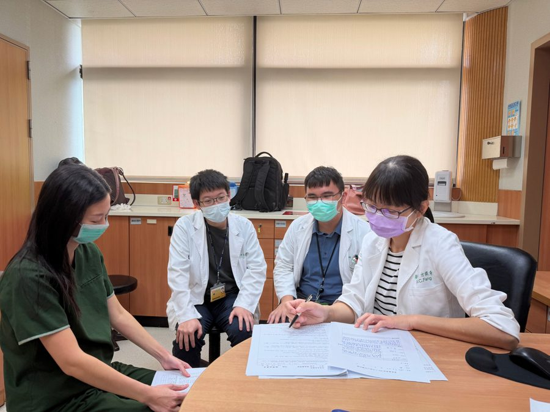
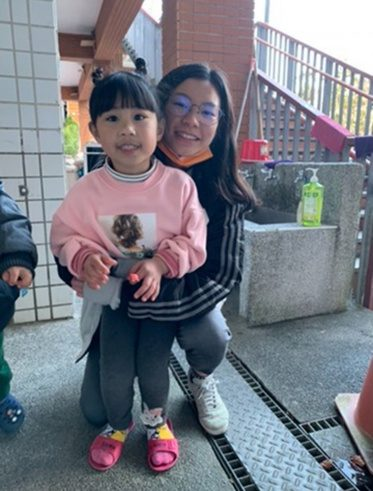
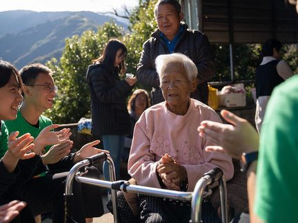

Community
走進社區的家醫
大學起參與羅卡達山地服務隊，深耕桃園復興鄉部落多年，從隊員做到生活長；也曾赴貴州侗族小學擔任志工。
林口長庚紀念醫院 PGY2 → 申請家庭醫學科住院醫師
大學起參與羅卡達山地服務隊，深耕桃園復興鄉部落多年，從隊員做到生活長；也曾赴貴州侗族小學擔任志工。
與北榮新竹分院陳曾基院長合作三篇論文，主題橫跨文獻計量、AI 答題準確性與醫院網站英文可近性。
兩篇第一作者研究都在評估 AI 的可靠度。我的原則是 AI 負責加速，人工負責把關，結論一律經人工複核。
我叫方瑋慈，來自桃園一個溫馨的家庭。因為爸爸工作的緣故，我從小輾轉於美國、台南、新竹、荷蘭、廣州等地求學，多次轉學的經驗迫使我很早學會觀察環境、體察他人情緒，也磨練出圓融待人與快速適應陌生環境的能力。媽媽一直教導我為自己的選擇負責，這份身教也在我與姐姐心中種下行醫的種子；如今姐姐是台北榮總眼科第二年住院醫師，我們姊妹倆互相砥礪，讓我更確定，成為對社會有貢獻的醫師，是我從小到大最想走的路。
高中起，我投入社會服務，曾赴貴州侗族小學擔任志工，並在長庚大學加入羅卡達山地服務隊，深耕復興鄉原住民部落多年，從隊員到生活長，協助衛教活動、獨居長者家訪與隊務統籌。另外，大三擔任醫學營隊輔長期間，我負責整個梯次的活動規劃、時間掌控與人力調度，並在突發狀況發生時迅速調整安排，這段經歷培養了我的領導能力，以及在壓力下快速判斷、解決問題的能力。
臨床實習期間，我學習從症狀推演鑑別診斷、觀察師長化解病人情緒的溝通技巧，也逐漸對臨床研究產生興趣。這份興趣延續到與新竹榮民總醫院陳曾基院長合作的研究計畫中。透過參與老師的社區醫療研究，我不僅累積紮實的研究訓練，更讀到老師記錄竹東偏鄉巡迴醫療現場的文字，深受觸動。老師引用的西方諺語「山不來就我，我就去就山」，讓我明白家醫科的核心價值從來不是坐等病人上門，而是主動走進資源匱乏的角落，這與我在復興鄉、貴州服務的體會不謀而合。
我也從老師的文字中看見一位醫師如何細膩體察病人與家屬言談背後的心理與人情世故，例如察覺一位母親堅持回診，其實是為了維繫與女兒相聚的理由，而選擇不點破。這種以人為中心的細膩，讓我對家醫科的精神有了更具體的想像。此外，遭遇挫折仍不放棄初衷的韌性，以及主動媒合健保署、地方政府、學校與企業基金會資源，扮演「資源媒合者」的角色，讓醫療服務能長久留在需要的地方，這些都讓我更堅定選擇家庭醫學科的方向。
台灣家庭醫學雜誌（Taiwan Journal of Family Medicine）
方瑋慈、陳曾基*（*通訊作者）
將《家庭醫學與基層醫療》2025 年全年 192 題通訊考題，一次輸入中美共 14 家 AI 軟體，比較答題可行性、正確率、解析完整度與錯誤類型。題目週四敲定，週日完稿。
11 家可一次完整作答 192 題，平均正確率 93.0%。Microsoft Copilot、小藝、智譜清言因字數限制或技術問題未能完整作答。
結果：錯誤題目集中於本土公共衛生政策與在地流行病學、臨床指引切點值與版本更新、疾病診斷準則細節，以及否定題型。其中 2 題被全部 11 家軟體答錯。
結論：AI 軟體在繁體中文家醫專業題目已有相當高的正確率，但對本土資料與最新指引仍有弱點。醫療人員應保有批判性思辨，把 AI 當輔助工具，並搭配多家軟體交叉比對與人工複核。
Journal of the Chinese Medical Association（JCMA）· 修訂稿 2026/10/09 送出
Fang WT, Fang WC, Yang FY, Chen TJ*
以改編的 MHCIE 量表（滿分 17 分），評估全台 23 家醫學中心網站的英文資訊。兩位評分者各自獨立評分後依協調規則整合為參考標準；ChatGPT、Claude、Gemini 以相同提示詞與評分標準、用內建瀏覽功能自行瀏覽網站評分，再以 ICC、加權 κ、MAE 與 Bland-Altman 比較一致性。修稿時依審稿意見加入第二位評分者與完整的一致性分析。
急診資訊最低（58.0%），健保與費用資訊的院際差異最大（SD = 1.07）。
| 評分者 | 總分 Mean ± SD | 與參考標準差異 | ICC(2,1) | MAE |
|---|---|---|---|---|
| 人工參考標準 | 13.52 ± 2.73 | — | 0.83* | 1.22* |
| Claude | 13.91 ± 2.92 | +0.39 | 0.29 | 2.57 |
| Gemini | 12.26 ± 3.40 | −1.26 | 0.30 | 2.65 |
| ChatGPT | 11.39 ± 2.04 | −2.13 | 0.16 | 2.83 |
*兩位人工評分者之間（整合前）的一致性。
Background：Language barriers impede healthcare access for foreign patients, and hospital websites are a primary source of pre-visit information. English-language information on Taiwan's medical center websites had not been systematically assessed.
Methods：All 23 designated medical centers were scored with an adapted MHCIE scale (five domains plus a binary specialty bonus item; maximum 17). Two raters scored independently and were reconciled into a reference standard; ChatGPT (GPT-4o), Claude (Claude 3.5 Sonnet) and Gemini (Gemini 3.5 Pro) scored the same websites in parallel.
Results：Mean reconciled total score was 13.52 ± 2.73 (range 8–17). Emergency health services information had the lowest relative score (58.0% of maximum); national health insurance information varied most (SD = 1.07). Mean differences were −2.13 (ChatGPT), +0.39 (Claude) and −1.26 (Gemini). Human inter-rater agreement (ICC = 0.83) exceeded every LLM's agreement with the reference standard (ICC ≤ 0.30). Only 11 hospitals (47.8%) offered languages other than English.
Conclusion：LLMs show potential as supplementary tools in well-defined domains but cannot yet replace human evaluation.
Journal of General Internal Medicine 2023;38(5):1312 · 美國一般內科學會會刊 · doi:10.1007/s11606-022-08018-x
Fang WC, Fang WT, Chen TJ*
醫學系三年級時參與。回應 JGIM 前一期 Cosentino 等人觀察到 COVID-19 論文比例激增的文章，我們從 WHO COVID-19 資料庫檢視兩年內的英文文獻計量研究。我負責收集並逐篇分類這些文章的主題與研究模式。這是我第一次參與研究，也是與陳曾基老師合作的起點。
最常見的做法是比較疫情前後的研究產出；許多研究只是換個主題或時間範圍重做一次。
背景：自 2019 年 12 月疫情爆發，COVID-19 相關論文急速增加，以數量為基礎的文獻計量研究也隨之大量出現。
發現：許多文獻計量研究彼此重複且零碎，只是更換主題或時間範圍。除了 93 篇探討整體研究趨勢，多數聚焦特定領域、疾病、族群、地區、作者或引用議題；49 篇結合多種參數，例如低中收入國家的皮膚科文獻。
觀點：過多的文獻計量研究會佔用非 COVID-19 研究的資源。若每篇原著摘要都能依 STROBE、PRISMA、CONSORT 等報告指引提供足夠資訊，搜尋引擎就能建立完整資料庫，讓研究者直接線上分析，把研究時間與期刊版面留給更有價值的研究。
合作三篇論文，全程透過 email 與 LINE 討論，從未見過面。第二篇論文週四深夜敲定題目，週日完稿。AI 時代，效率飛速，後生可畏。
第三篇英文論文歷時兩個月，可見方醫師韌性十足、鍥而不捨的軌跡。她已掌握研究方法與寫作技巧，也習得 AI agents 的運作。
陳曾基 院長 臺北榮民總醫院新竹分院｜推薦函摘錄，2026 年 7 月 27 日
推薦函全文，點選可放大。
以下是我在研究與學習中實際使用 AI 的方式。每一項的產出都經過我人工核對後才定稿。
設計研究評估 14 家 AI 軟體的醫學答題能力，以及 3 家 AI 的網站評分能力，量化它們在哪裡可靠、在哪裡會出錯。
192 題 × 11 家的答案，先由 AI 輔助比對標準答案，再由我逐題人工複核，確保正確率判定無誤。
JCMA 投稿稿件以 AI 協助語言編修與可讀性，研究設計、資料分析與詮釋則完全由作者完成，並在致謝中如實揭露。
論文圖表以 Python 繪製；這個面試網站則由我與 Claude 協作完成架構規劃與前端製作。
AI 應用的結論：AI 負責處理「效率」，而人類負責提供「批判性思維」。
PGY 期間主動完成的家醫核心訓練，涵蓋慢性病、長照、安寧、預立醫療、戒菸與旅遊醫學。點選可放大。


